Entre 1850 e 1945, aproximadamente, a Europa viveu um processo chamado de Segunda Revolução Industrial, com estímulos ao desenvolvimento científico para o domínio cada vez maior dos meios e recursos naturais, com a ampliação da indústria impulsionada pelo uso do vapor e da eletricidade. Embora convivesse com o Neoclássico e o Romântico, o Realismo – que surgia naquele momento – propunha a imitação precisa das percepções visuais, e seus artistas representavam os fatos do mundo moderno, retratando somente o que era considerado real, o mais objetivo possível aos sentidos. Assim, tem-se um retrato da sociedade formal, sóbria e silenciosa. Essa preocupação com a percepção e com os sentidos também motivou o desenvolvimento de experiências estéticas sobre luminosidade e cores. Esse foco abriu campo para novas perspectivas artísticas, como o Impressionismo, o Pós-Impressionismo e o Simbolismo, que também tiveram suas expressões próprias no Brasil.
Neste capítulo, serão abordadas as habilidades EM13LGG601, EM13LGG602, EM13LGG603, e EM13LGG604.
Millet, Jean-François. Os serradores de madeira, 1848. Óleo sobre tela, 57 cm × 81 cm. Victoria & Albert Museum, London.
Tisha Thackston/Alamy/Fotoarena/Victoria & Albert Museum, London
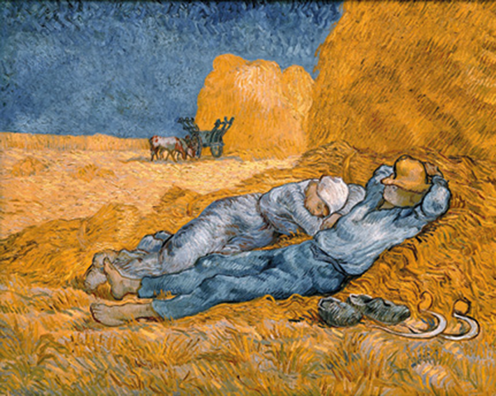VAN GOGH, Vincent. A Sesta, 1890. Óleo sobre tela, 73 cm × 91 cm. Museu d’Orsay, Paris.
Musée d’Orsay, dist RMN-Grand Palais
A realidade e a arte
No final do século XIX e início do século XX, a Europa passou por grandes e rápidas transformações, principalmente a partir da industrialização. Na França, entre 1850 e 1900, surgiu um novo movimento artístico nas artes visuais: o Realismo. Os artistas desse movimento se opunham artística e culturalmente à visão subjetiva e emocional amplamente defendida pelos artistas do Romantismo e procuravam, em suas obras, desmascarar as mazelas sociais, fazer críticas políticas e lutar pela liberdade individual, bem como retratar cenas cotidianas e trabalhadores comuns. O Realismo rompeu formal e estilisticamente com as cenas históricas, literárias e religiosas (características do Academicismo), substituindo-as pela representação de pessoas comuns em paisagens realistas e por naturezas-mortas – que até então eram consideradas uma arte inferior pela Academia Francesa de Belas-Artes. As emoções e os personagens fictícios (como seres mágicos e fantasiosos), característicos do Romantismo, foram substituídos por figuras de trabalhadores e o retrato da vida social. Além disso, o Realismo fez parte de um movimento mais amplo nas Artes, que começou na França como consequência de grandes mudanças sociais, tais como o rápido crescimento da população, as quebras de safras e a industrialização acelerada – o que resultou em muitas privações e miséria, sobretudo aos pobres das áreas urbanas e rurais. Essa situação caótica, por sua vez, culminou na Revolução de fevereiro de 1848. Depois disso, o governo provisório francês garantiu o voto universal aos homens e deu aos cidadãos o “direito ao trabalho”. Dessa forma, os pobres conquistaram voz política. Nesse contexto, os pintores realistas reagiram às transformações sociais e políticas opondo-se ao Romantismo e à arte acadêmica, optando por retratar pessoas e acontecimentos comuns, do cotidiano, num estilo de pintura naturalístico e quase fotográfico, fundado na observação cuidadosa.
O Realismo rompeu formal e estilisticamente com as cenas idealizadas e com a pintura histórica característica da arte acadêmica do início do século XIX.
As cenas eram retratadas em grandes telas, com o intuito de valorizá-las e lhes conferir a mesma importância das pinturas dos maiores eventos históricos. Esse movimento teve influência direta de ideais dos filósofos alemães Karl Marx (1818-1883) e Friedrich Engels (1820-1895). As obras de arte retratavam as diferenças de classe no cenário da Revolução Industrial e, nesse sentido, a arte passou a ser destinada não somente à elite, mas também às pessoas de diferentes classes sociais. A exposição russa Os viajantes, organizada por um grupo de artistas realistas, teve esse propósito.
Por dentro da arte
Courbet, Gustave. Os quebradores de pedra, 1849. Óleo sobre tela, 165 cm × 257 cm. Galeria Neue Meister, Dresden.
Galeria Neue Meister, Dresden
A obra Os quebradores de pedra, do francês Gustave Courbet (1819-1877), é um ícone do Realismo social e expõe o empobrecimento e a vida miserável dos camponeses franceses daquela época. O artista mostra um homem aparentemente mais velho e um jovem realizando o extenuante trabalho de quebrar pedras para a construção de uma estrada. A presença de pessoas de diferentes idades representa o ciclo infindável desse tipo de trabalho, em que se começa ainda muito moço e se envelhece fazendo a mesma coisa. Ambos são retratados com roupas velhas e rasgadas, atestando a pobreza em que vivem. Ao fundo, há um velho caldeirão e um recipiente, possivelmente com água, mostrando as dificuldades do trabalho. Uma picareta descansa à frente do jovem, enquanto ele carrega pedras, numa alusão de que assim será sua vida, até se tornar velho como o homem que acompanha. Essa obra é considerada um manifesto realista sobre o trabalho braçal a que estavam submetidos os camponeses franceses, mas que ainda hoje pode representar a vida de muitos trabalhadores no mundo, inclusive em nosso país. Foi exposta pela primeira vez no Salão de Paris, em 1850; porém, a obra original foi destruída durante a Segunda Guerra Mundial, juntamente com outros 154 quadros, quando um veículo de transporte para o castelo de Königstein, perto de Dresden, foi bombardeado pelas forças aliadas em fevereiro de 1945.
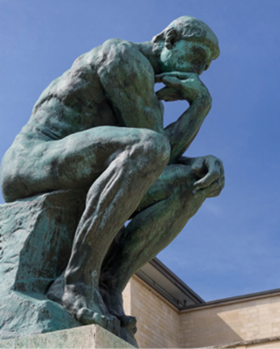
O pensador (1903), Auguste Rodin. Bronze, 183 cm × 163 cm. Museu Rodin, Paris, França.
Douglas O’Brien (CC BY-SA 2.0)/Wikimedia Commons
O movimento do Realismo se estendeu por outros países, como Áustria, Alemanha e Itália. Também influenciou o teatro, a música e a literatura com temáticas voltadas para o cotidiano, como a obra A comédia humana (1830), do francês Honoré de Balzac (1799-1850). Nas novelas que compõem essa imensa obra, o autor apresenta um painel dos costumes da sociedade francesa do século XIX. Os arquitetos e os engenheiros desse período procuravam responder às novas necessidades urbanas decorrentes da industrialização, num espaço urbano onde não cabiam mais templos e palácios. Nesse momento, as cidades precisavam de fábricas, estações ferroviárias, lojas, bibliotecas, escolas, hospitais e moradias, tanto para os operários quanto para a nova burguesia. No âmbito das esculturas, o francês Auguste Rodin (1840-1917) trabalhou os movimentos corporais, a repetição ou combinações de figuras e fragmentos, sem o uso de detalhes, para melhor expressar o que era essencial. Uma de suas obras mais conhecidas é O pensador (1903), que representa o escritor italiano Dante Alighieri (1265-1321), um homem de corpo torturado e alma atormentada, porém um livre-pensador determinado a transcender o sofrimento por meio da poesia. Na pintura, destacam-se Jean-François Millet (1814-1875), Gustave Courbet (1819-1877) e Édouard Manet (1832-1883).
Millet e Courbet: os trabalhadores como tema
Jean-François Millet (1814-1875) é um dos pintores realistas mais conhecidos. Foi membro fundador da Escola de Barbizon e desenvolveu um método próprio de pintar paisagens. Destacou-se na representação de trabalhadores do campo. Millet acreditava que as pessoas eram mais importantes que o cenário natural. Na obra As respigadeiras, ele retrata três camponesas inclinadas para recolher os restos da colheita de trigo, envoltas em uma luz fria e dourada, o que confere dignidade às figuras. As cores dos chapéus (vermelho e azul) e da camisa de uma das camponesas (branco) remetem à bandeira francesa e simbolizam a luta do final do século XIX, refletida no lema “liberdade, igualdade e fraternidade”, da então recente Revolução Francesa. Além disso, a obra ainda apresenta uma crítica social ao trabalho feminino da época. Naquele tempo, os camponeses tinham o direito de recolher as espigas de trigo esquecidas após a colheita. Nesse contexto, Millet retrata as mulheres com posturas cansadas e ainda trabalhando, revelando, a distância, os ceifeiros que carregam o abundante produto das colheitas. Ao fundo, o artista representa o proprietário a cavalo, de maneira embaçada e pequena, observando as trabalhadoras. Essa pintura é mais do que uma mera representação da vida rural. Gerou muita polêmica em sua primeira exposição ao público por se tratar de uma observação social dos trabalhadores do campo no século XIX. Hoje é considerada uma obra-prima do Realismo.
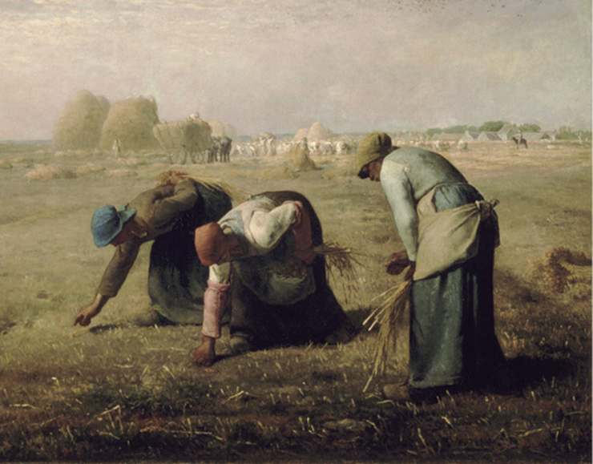Millet, Jean-François. As respigadeiras, 1857. Óleo sobre tela, 83,5 cm × 110 cm. Museu d’Orsay, Paris.
Google Cultural Institute/Musée d’Orsay, dist RMN-Grand Palais
Apesar de Millet ser um dos principais pintores realistas, Gustave Courbet é considerado o criador do Realismo social na pintura, por retratar as classes populares, as disparidades sociais e as temáticas da vida cotidiana. Em suas obras, Courbet representou as cenas de maneira quase fotográfica. Em Moças peneirando trigo, o artista retrata o trabalho duro de mulheres da época em plena juventude (mas não apenas delas), bem como as paredes sujas, o olhar cansado e entediado no rosto da jovem sentada e o cabelo desgrenhado do menino curioso.
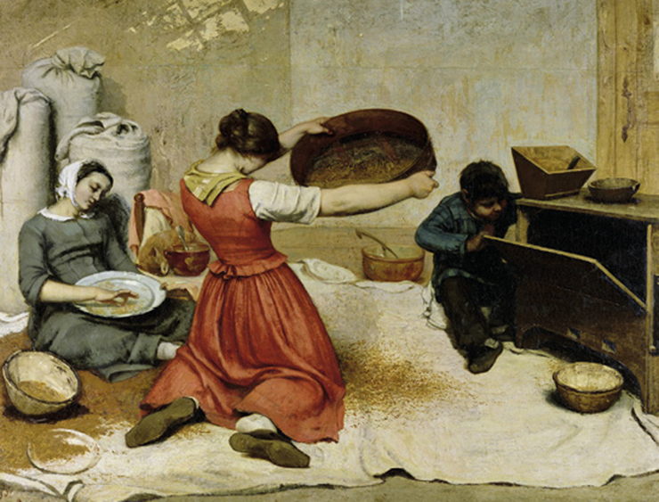COURBET, Gustave. Moças peneirando trigo, 1854-1855. Óleo sobre tela, 131 cm × 167 cm. Museu de Belas Artes de Nantes
Museu de Belas Artes de Nantes
Courbet utilizava modelos reais em suas pinturas. Para essa obra, suas irmãs Zoe e Julieta teriam sido as modelos. O menino seria seu filho, fruto de um relacionamento com Desire Binet. As obras do artista foram duramente condenadas pelos críticos de arte da época. Após ter seus quadros recusados em uma exposição, Courbet organizou uma mostra individual chamada O pavilhão de realismo. Mais tarde, passou a abordar temáticas voltadas à sensualidade, que causaram grande polêmica.
Mãos à obra
Observe novamente a obra As respigadeiras. Depois, pensando na sociedade atual, escolha um grupo de trabalhadores brasileiros. Em seguida, selecione personagens que farão parte de uma pintura ou de um desenho feito com base no estilo de Millet. Use folha de papel A4, canetas, pincéis ou lápis.
Tenha em mente as condições sociais e de trabalho dessas pessoas para retratá-las da maneira mais realista possível.
Manet: o outro lado da realidade
Édouard Manet (1832-1883) pertencia a uma família da alta burguesia de Paris. Diferentemente de Courbet, seu realismo não apresentava críticas sociais, e seu propósito era “ser do seu próprio tempo”, “pintar o que se vê”. Sua preocupação não era retratar as pessoas ou fazer uma crônica da época, mas, sim, trabalhar a luminosidade intensa e o efeito das cores – o que o levou a ser considerado precursor do Impressionismo. Manet também causou polêmica em algumas de suas obras, como Almoço na relva (1863), em que retratou uma mulher nua acompanhada por dois homens elegantemente vestidos. Nessa obra, percebe-se a inverossimilhança da cena e a parcial aceitação de Manet em relação ao realismo de Courbet. No primeiro plano, Manet retratou uma modelo que frequentemente trabalhava para o artista, o irmão e um amigo do pintor; ao fundo, vê-se uma figura feminina com roupas íntimas saindo da água; à frente, há uma cesta com frutas, pães, e roupas; no alto, ao centro, há um pequeno pássaro vermelho e preto. Manet posicionou o centro de interesse da imagem, destacado pela luminosidade, na jovem nua. Na composição, o artista criou uma estrutura formada por triângulos: o primeiro envolve as três figuras sentadas sobre a relva, em primeiro plano; o segundo, sobreposto ao primeiro, é formado pela mulher nua, pelo homem sentado mais à frente e pela figura feminina saindo da água, em um plano mais ao fundo da paisagem; por fim, o terceiro abrange todas as pessoas e tem como vértice o pássaro vermelho e preto no ponto mais alto da tela.
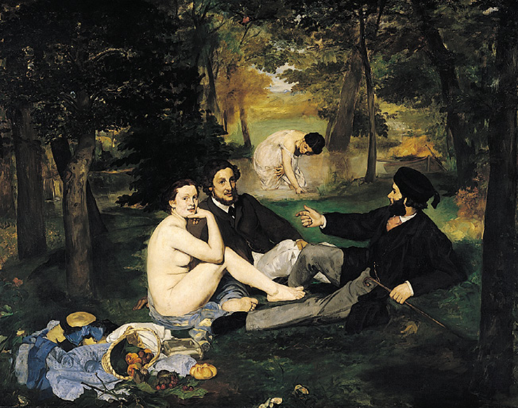Manet, Édouard. Almoço na relva, 1863. Óleo sobre tela, 208 cm × 264,5 cm. Museu de Orsay, Paris.
Musée d’Orsay, dist RMN-Grand Palais
Além de obras como essa, o artista também se dedicou à pintura de cenas urbanas da cidade de Paris, na França. Ao utilizar cores vibrantes e luminosas em suas pinturas, Manet abandonou as gradações suaves de cores, características da arte acadêmica.
Os impressionistas adotaram esse título após um crítico de arte criá-lo em uma exibição da obra Impressão, sol nascente, de Monet. Esses artistas tinham como objetivo representar as impressões que os efeitos da luz produziam nos objetos ou nas cenas retratadas.
Novos olhares para a arte
Na segunda metade do século XIX, um grupo de artistas franceses revolucionou a pintura e deu início às grandes tendências da arte do século XX. Em oposição aos temas históricos e à apresentação de figuras humanas com contornos delimitados e idealizados, esses artistas retratavam suas impressões da vida moderna e trabalhavam incansavelmente nos efeitos da luz sobre os objetos. Sem formar uma escola propriamente dita, compartilharam técnicas e procedimentos e ficaram conhecidos como impressionistas. O surgimento da fotografia teve um grande impacto na pintura. O registro visual e a reprodução exata das imagens do cotidiano possibilitado pela fotografia impulsionaram pesquisas e experiências artísticas que colocaram a pintura em outro patamar. Os artistas impressionistas desejavam, dessa forma, que ela fosse mais que apenas uma imitação fiel das cenas do dia a dia. Assim, eles se distanciavam do Realismo e faziam questão de terminar suas obras no local de observação. Alguns artistas impressionistas representavam um mesmo objeto ao longo do dia, com a alteração de cores e os efeitos da luz. As imagens não apresentavam contornos nítidos e as sombras passaram a ser coloridas em vez de escuras (como os pintores as retratavam até então). As cores e as tonalidades não eram mais obtidas com a mistura de tintas na paleta; os artistas aplicavam as cores puras em pinceladas curtas e rápidas, que se combinavam no olhar do observador. Por esse motivo, essas obras devem ser apreciadas a certa distância. Os principais artistas do Impressionismo são Claude Monet (1840--1926), Jacob Abraham Camille Pissarro (1830-1903), Edgar Degas (1834--1917) e Pierre-Auguste Renoir (1841-1919). Monet produziu uma série de 30 telas com os efeitos da luz na fachadada catedral de Rouen, em Paris, em diferentes momentos do dia. Pissarro foi um dos impressionistas mais voltados para o engajamento político. Era amigo de Monet e Renoir e participou de todas as lutas do Impressionismo. Foi amigo próximo de Cézanne e incentivou Gauguin e Van Gogh. Sua busca era aperfeiçoar o ofício da pintura; para isso, experimentou diversas técnicas. Na busca de novas formas de expressão, ele também foi um dos primeiros impressionistas a recorrer à técnica da divisão das cores por meio da utilização de manchas de cor isoladas, como na obra O jardim de Les Mathurins em Pontoise.
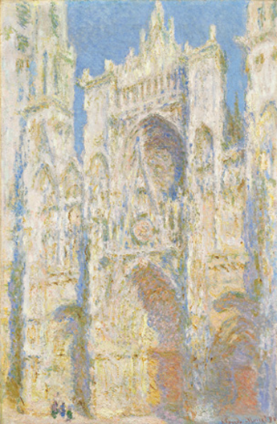Monet, Claude. Fachada oeste sob a luz do sol, 1894. Óleo sobre tela, 100 cm × 65 cm. National Gallery of Art, Londres.
National Gallery of Art, Londres
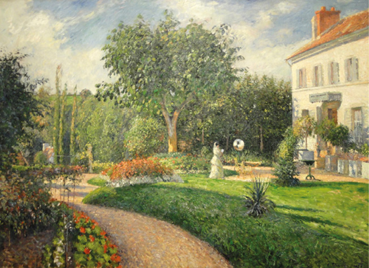PISSARRO, Camille. O jardim de Les Mathurins em Pontoise, 1876. Óleo sobre tela, 113 cm × 165 cm. Museu de Arte Nelson-Atkins, Kansas City, Missouri.
Museu de Arte Nelson-Atkins, Kansas City, Missouri.
No decorrer da guerra franco--prussiana (1870-1871), o artista residiu na Inglaterra e praticamente todos os seus quadros foram destruídos. Quando voltou a Paris, começou a pintar na companhia de Cézanne. Se Monet e Pissarro se destacaram na representação da luz em ambientes externos, Degas é quem sobressai na captura da luz e da cor em ambientes fechados. Além da cor, o artista valorizava o desenho e a luz artificial. Suas obras apreendem um instante do movimento do corpo ou da expressão facial, num enquadramento que revela forte influência da fotografia. Retrata o ambiente com cores delicadas e linhas de movimento suaves, em especial nas obras que retratam a dança.
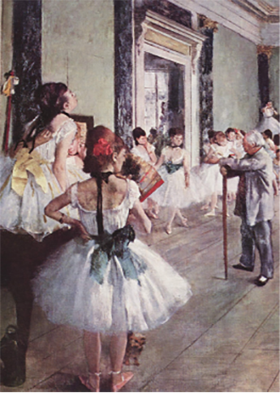Degas, Edgar. A aula de dança, 1875. Óleo sobre tela, 85 cm × 75 cm. Museu d'Orsay, Paris.
Musée d’Orsay, dist RMN-Grand Palais
Mas foi Renoir o artista impressionista que mais ganhou destaque ainda em vida. Suas obras representam de maneira otimista e alegre a intensa movimentação da vida parisiense do fim do século XIX. Em 1869, Renoir e Monet pintaram a mesma cena, de um grupo de pessoas se divertindo ao redor do rio Sena, próximo a Paris. Esse fato deu fama às duas obras e foi exemplo do empenho dos artistas em explorar as superfícies que refletem luz, cada um com suas particularidades. Renoir usa uma escala de cores mais suave e iluminada, e a paleta tende aos tons pastel e ao azul-claro. Note que as pessoas não têm traços claros, de modo que o motivo da pintura é o efeito da luz. Monet retrata o efeito da luz de forma mais “fotográfica”, como se o reflexo na água fosse um espelho. As pessoas são praticamente borrões.
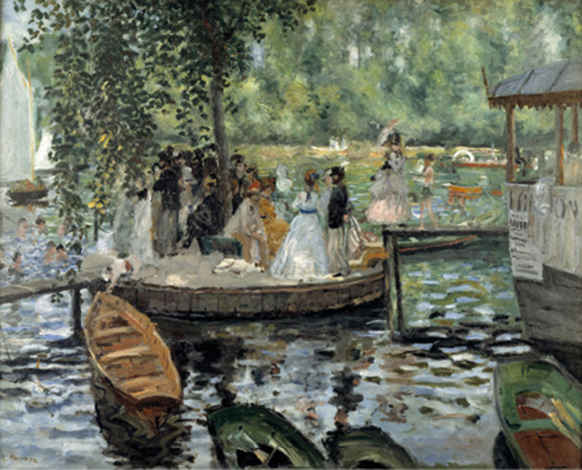Renoir, Pierre Auguste. La Grenouillère, 1869. Óleo sobre tela, 66,5 cm × 81 cm. Nationalmuseum, Estocolmo.
Nationalmuseum, Estocolmo 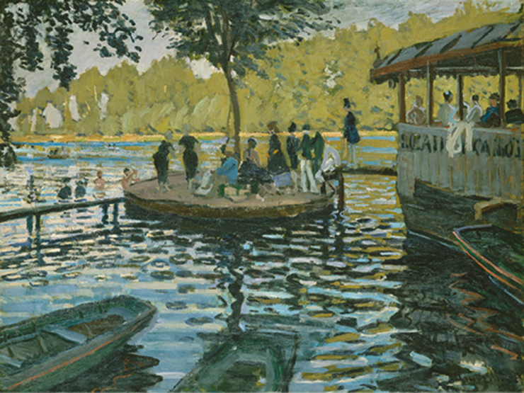
Monet, Claude. La Grenouillère, 1869. Óleo sobre tela, 74,6 cm × 99,7 cm. Museu Metropolitano de Arte, Nova York.
Museu Metropolitano de Arte, Nova York
Cores do irreal
No final do século XIX, mais precisamente entre 1880 e 1890, surgiu na França uma corrente artística de cunho espiritualista, cujo objetivo era a expressão da vida interior, ou seja, da “alma das coisas”. Conhecida como Simbolismo, essa corrente sonda os mistérios do mundo e o universo inconsciente e revela o que está oculto com a linha e a cor. Se o Impressionismo se concentra no que o artista vê, o Simbolismo trabalha os valores transcendentes, como o “bem” e o “belo”. A mulher é tema recorrente entre os simbolistas, representada ao mesmo tempo como musa, deusa e prostituta. A religião, a morte e o pecado também são temas recorrentes, com forte teor moralizante. As composições simbolistas são lineares, quase sempre em primeiro plano. Porém, como esse movimento não apresenta uniformidade estilística, impossibilita uma definição que englobe todos os artistas. Trata-se, portanto, de um conjunto de obras que retratam as emoções e o estado da alma, e é considerado precursor do Expressionismo e do Surrealismo. Apesar de ter participado da quinta exposição coletiva dos impressionistas, em 1880, Paul Gauguin (1848-1903) seguiu outros rumos. Foi influenciado pelas pinturas japonesas e fez uso de cores fortes e da alegoria como temática, característica do Simbolismo, que dominou sua obra a partir de 1890.
Gauguin viveu por anos no Taiti em busca de novos temas e da libertação dos condicionamentos da arte europeia. A simplicidade da vida local despertou no artista uma nova percepção, o que se refletiu em suas obras, carregadas de cores intensas e de erotismo. As pinturas de Gauguin expressam silêncio, lentidão, torpor e até tristeza. As grandes áreas de cores chapadas evocam a firmeza e robustez dos corpos que amadurecem e se ampliam, como plantas sob o sol. Na obra Arearea, as figuras foram pintadas com cores intensas, que não correspondem à realidade – como o cão em tom avermelhado. As cores, como o verde, o branco, o vermelho e o azul, ocupam áreas bem delimitadas. A cena evoca tranquilidade, como se as pessoas estivessem integradas à natureza.
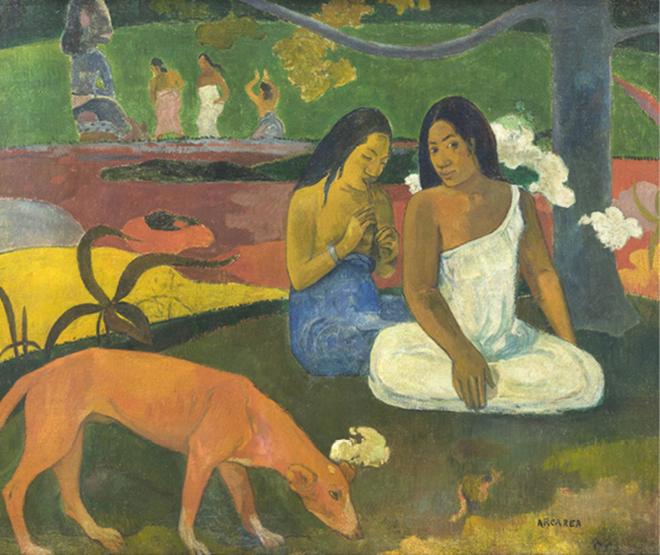Gauguin, Paul. Arearea, 1892. Óleo sobre tela, 75 cm × 94 cm. Museu d’Orsay, Paris.
Google Cultural Institute/Musée d’Orsay, dist RMN-Grand Palais
... no século XIX, a França, país de origem de Gauguin, era um centro de grande desenvolvimento científico e industrial. Muitas pessoas de diferentes países iam até Paris para conhecer e aprender novas tecnologias características da época. Já o Taiti é formado por um conjunto de pequenas ilhas no oceano Pacífico, ao sul do Equador, e, naquela época, tinha a natureza bem preservada, sem a tecnologia e os meios de comunicação comuns na Europa. Era considerado um paraíso natural que podia oferecer novas formas de se relacionar com a vida e com a natureza, em um modo de vida mais simples e sem a agitação típica de Paris; por isso, tornou-se refúgio de Gauguin.
Assim como Gauguin, o austríaco Gustav Klimt (1862-1918) foi um pintor simbolista, sem, no entanto, se fixar nesse estilo. O beijo é uma de suas obras mais conhecidas; composta de motivos geométricos em mosaico, em que a abstração e o realismo convivem e se confrontam, ela retrata o próprio artista e sua amada. A obra pertence à fase dourada do artista, na qual ele faz uso predominante de folhas ou lâminas de ouro. A tela, curiosamente, tem o formato de um quadrado perfeito, e o casal apaixonado ocupa o centro do quadro. Outros artistas da época também acabaram alian-do-se momentaneamente ao Simbolismo, que se firmoumais como uma atitude espiritual do que como um movimento estético propriamente dito.
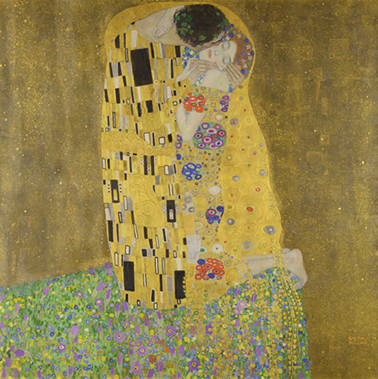Klimt, Gustav. O beijo, 1907-08. Óleo sobre tela, 180 cm × 180 cm. Österreichische Galerie Belvedere, Viena.
Google Cultural Institute/Österreichische Galerie Belvedere, Viena
Caminhos abertos para novas artes
O movimento impressionista deu origem ao Pós-Impressionismo, movimento que foi pouco coeso e articulado, como o anterior. O termo abrange o trabalho de pintores que, entre 1880 e 1890, exploravam as possibilidades abertas pelo Impressionismo, em direções muito variadas. O termo Pós-Impressionismo foi cunhado pelo crítico britânico Roger Eliot Fry (1866-1934) em 1910, em visita à exposição realizada na Grafton Galleries, em Londres, que contava com obras de Paul Cézanne (1839-1906), Vincent van Gogh (1853-1890) e Paul Gauguin, que eram as figuras centrais desse movimento. Cézanne, diferentemente dos impressionistas cujas pinceladas dissolviam formas na luz reluzente e na atmosfera, pintava com pinceladas sobrepostas, com as quais compunha uma estrutura sólida dos diferentes elementos da paisagem. Em A casa do homem enforcado, as pinceladas e as formas geométricas (principalmente triângulos) que constroem a composição em torno de um ponto central conferem densidade e volume aos elementos da paisagem. As características de Cézanne são a composição densa, os volumes recortados, o uso de formas geométricas – como cilindros, cones e esferas – e a luz que produz um efeito material na tela, sem brilhos nem transparências.
Sonhos
Direção: Akira Kurosawa. 1990. Classificação indicativa: 12 anos. O filme é composto de 8 curtas--metragens que apresentam relações sutis entre si. Em um deles, chamado Corvos, é mostrado um jovem pintor observando as pinturas de Van Gogh no museu, que acaba conseguindo entrar nas telas do artista, conversar com ele e experimentar as incríveis paisagens europeias que motivaram suas pinturas.
A aproximação entre Cézanne, Gauguin e Van Gogh foi fundamental para o desenvolvimento da arte pós-impressionista. No entanto, a convivência e essa colaboração não impediram que cada um tivesse o próprio estilo. A proximidade desses artistas ocorreu mais por suas personalidades criativas e por não se adaptarem a um modelo preexistente do que por formarem uma escola. Quando Gauguin descobriu as obras de Cézanne, passou a explorar um estilo antinaturalista, devido ao uso de áreas com cores puras e planas. No tempo em que esteve no Taiti, o artista pesquisou a cultura dos povos primitivos, refletida também em suas obras.
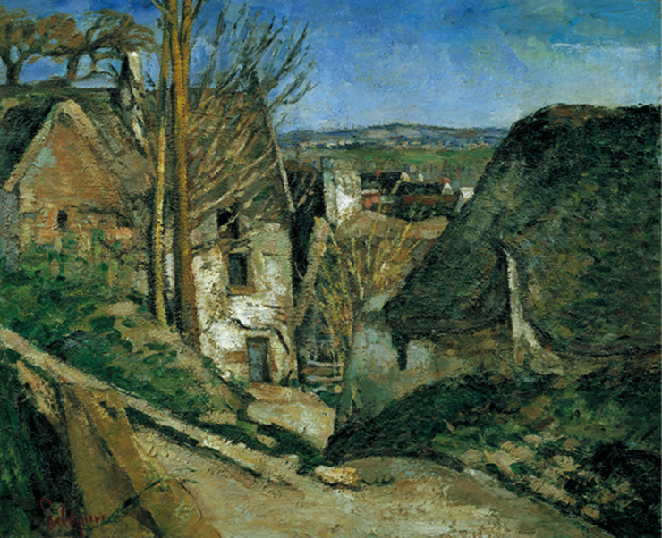Cézanne, Paul. A casa do homem enforcado, 1873. Óleo sobre tela, 56 cm × 66 cm. Museu d’Orsay, Paris, França.
akg-images/Album/Fotoarena/Museu d’ Orsay, Paris
Van Gogh, no entanto, já apresentava uma expressividade nas vigorosas pinceladas e na explosão de cores, como na obra Noite estrelada (1889), que contém elementos de abstração, como as estrelas.
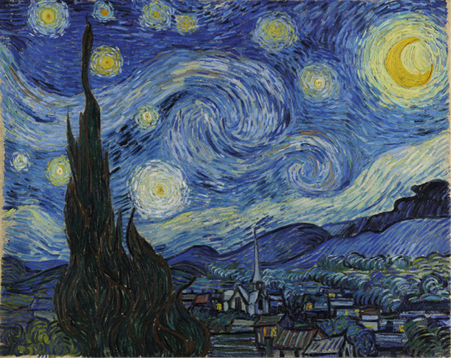Van Gogh, Vincent. Noite estrelada, 1889. Óleo sobre tela, 73,7 cm × 92,1 cm. Museu de Arte Moderna de Nova York.
Google Cultural Institute/Museu de Arte Moderna de Nova York
Pensar sobre a realidade, as impressões e os símbolos Com base no que foi estudado neste capítulo, considere as seguintes questões para refletir e discutir.
- Você identifica a influência dos artistas pós-impressionistas em seu cotidiano?
- O Realismo tinha como princípio expressar a realidade de maneira a incluir críticas sociais nas obras. Você reconhece essa característica nas obras contemporâneas e, em particular, no lugar em que vive? Pesquise um exemplo.
- Como o universo dos sonhos e das fantasias é representado na arte simbolista?
As três principais figuras do Pós-Impressionismo influenciaram outros movimentos posteriores. As obras de Cézanne estão na base do Cubismo de Pablo Picasso (1881-1973) e Georges Braque (1882-1963); Gauguin teve uma rápida passagem pelo Simbolismo e influenciou muitos artistas desse movimento, e Van Gogh fundou as bases do Expressionismo. A efervescência cultural e a influência desses artistas levaram a arte moderna a trilhar novos caminhos e criaram-se estéticas nunca antes imaginadas.
1
Uespi A cultura não ficou ausente das mudanças trazidas pela modernidade. Surgiu uma sensibilidade diferente, dos tempos do neoclassicismo, que causou admiração e polêmicas. Na arte do século XIX, por exemplo, os impressionistas:
- procuraram construir novas concepções estéticas, recusadas pelos conservadores e pelos salões de exposição oficiais. seguiram o realismo da pintura de Gustave Courbet, colocando novas cores e cenas expressivas da vida cotidiana.
- firmaram uma ruptura com os padrões tradicionais, mas foram bem-aceitos pelos críticos franceses.
- negaram o uso de técnicas atualizadas, retomando padrões renascentistas, mas com inovação na escolha das paisagens.
- tiveram em Manet seu representante principal, o qual foi muito elogiado, na época, pela sua ousadia.
2
Analise a obra Still life, maçãs e peras, de Gustave Courbet.
COURBET, Gustave. Still life, maçãs e peras, 1871. Óleo sobre tela, 31,5 cm × 36,2 cm. Coleção particular.
Essa pintura integra o Realismo, movimento que teve como principais expoentes os artistas Jean-François Millet, Gustave Courbet e Édouard Manet. Uma das características do movimento era a forte crítica à sociedade e aos gêneros artísticos anteriores, especialmente à Arte Acadêmica. Com base na leitura da imagem e em seu conhecimento prévio, marque a alternativa que apresenta uma das críticas realizadas pelos realistas.
- Utilização do gênero natureza-morta, tido pelos academicistas como inferior.
- Destaque na representação da elite social da época como personagem central.
- Manutenção de telas que apresentam cenas históricas, literárias e religiosas.
- Enfoque na criação de quadros abstratos, com cenas não figurativas.
- Ausência de representação de trabalhadores braçais e da natureza.
3
Sobre as características do Realismo, marque a alternativa que não faz parte desse movimento:
- Atuação dos personagens sob a lei do determinismo.
- Concepção da realidade do ponto de vista materialista.
- Foco em questões morais e sociais.
- Retomada de valores cristãos.
- Preocupação crítica.
1
UFPR (Adapt.) Na Europa do século XIX:
- 01. As duas grandes escolas literárias da época foram o Romantismo e o Realismo. Este último utilizou como fonte de inspiração os problemas sociais resultantes das distorções criadas pela industrialização.
- 02. A “Segunda Revolução Industrial” caracterizou-se pelo estreito relacionamento entre ciência e técnica. Esta situação promoveu importantes mudanças na estrutura de produção das fábricas, mas também contribuiu para o agravamento de problemas sociais.
- 04. Nesse período, a Inglaterra pode ser tomada como o modelo ideal do nascente capitalismo industrial: economia forte e desenvolvida, poderio militar e regime político estável, assentado no crescimento da representatividade das camadas médias de sua população.
- 08. O final do século foi marcado pela suspensão das disputas políticas e econômicas entre as grandes potências europeias, levando ao internacionalismo e à progressiva pacificação do continente.
- 16. As pesquisas e descobertas realizadas nos campos da física e da química tiveram aplicação prática e estética no desenvolvimento de novas formas artísticas, como a fotografia e o cinema. 32. A cultura popular viu-se ameaçada pelos movimentos migratórios em direção às cidades e pela adoção de políticas nacionais de educação.
- Soma:
2
UEM-PR O Impressionismo foi um movimento artístico surgido na França no final do século XIX. A respeito deste movimento assinale a(s) alternativas correta(s).
- 01. A pintura impressionista postulava uma nova concepção do espaço, sem o uso da “perspectiva científica” renascentista.
- 02. Os impressionistas tiveram um sucesso imediato, tendo os pintores deste movimento recebido vários prêmios da Academia Francesa de Belas Artes.
- 04. Uma explicação para o uso do termo impressionista é o fato de, durante muitos anos, os pintores deste movimento terem representado apenas crepúsculos.
- 08. Um dos pintores impressionistas mais conhecidos é Claude Monet.
- 16. O uso dos pigmentos e a pintura ao ar livre são duas características marcantes do Impressionismo.
- Soma:
3
UEL-PR Observe a figura e leia os textos a seguir.

SEURAT, Georges-Pierre. Uma tarde de domingo na Ilha Grande Jatte. 1884, óleo sobre tela, 2,60 m × 3,50 m. Art Institute of Chicago, Chicago.
O impressionismo substituiu o enfoque conceitual da natureza pelo enfoque perceptual, baseado na experiência de fato.
DENVIR, B., 1974 apud MORAIS, F. Arte é o que eu e você chamamos arte. Rio de Janeiro: Record, 2000. p. 249. Adaptado.
Os pintores neoimpressionistas são aqueles que instauraram e, depois de 1886, desenvolveram a técnica de divisão, empregando como meio de expressão a mistura óptica de tons e tintas. Para estes pintores, o ritmo, a medida, o contraste foram conduzidos a esta técnica, atendendo ao seu desejo de um máximo de luminosidade, coloração e harmonia.
SIGNAC, P., 1899 apud MORAIS, F. Arte é o que eu e você chamamos arte. Rio de Janeiro: Record, 2000. p. 250. Adaptado.
A partir da figura, dos textos e dos conhecimentos sobre o que caracteriza o Impressionismo e o Neoimpressionismo, atribua V (verdadeiro) ou F (falso) às afirmativas a seguir:
- ( ) Exploração de novos parâmetros e concepções a partir das descobertas sobre a fotografia, a óptica, a física e o funcionamento da visão.
- ( ) Enfoque perceptual que destaca os elementos visuais, como ponto, luz e cor, baseado na experiência visual.
- ( ) Ênfase nos padrões acadêmicos dos salões oficiais e preferência pela representação naturalista da figura humana.
- ( ) Recusa dos hábitos de ateliê, como iluminar modelos e começar com o desenho de contornos para depois passar ao claro-escuro e à cor, dando preferência ao trabalho ao ar livre.
- ( ) Recusa da pesquisa sobre a percepção óptica quanto à decomposição da luz em componentes cromáticos.
Assinale a alternativa que contém, de cima para baixo, a sequência correta.
- V, V, F, V, F
- V, F, V, F, V
- V, F, F, F, V
- F, V, F, V, F
- F, F, V, F, V
Superação
UFSM-RS Para responder à questão, observe atentamente a imagem e considere também os dados que a seguem. Analise as afirmativas feitas a partir da obra de Van Gogh. Em qual dessas afirmativas a oração adjetiva expressa um comentário INCOERENTE?
VAN GOGH, Vincent. Noite estrelada. Óleo sobre tela, 73,7 cm × 92,1 cm. Museu de Arte Moderna de Nova Iorque, EUA.
- A Noite Estrelada integra o acervo do Museu de Arte Moderna de Nova Iorque (EUA), onde os frequentadores podem apreciar a obra de Van Gogh.
- O azul, empregado para representar a noite, contrasta com o amarelo da lua e das estrelas, criando um efeito interessante, o qual ratifica o título da obra.
- Na obra do pintor holandês, na qual se destacam os astros celestes, observa-se uma distribuição assimétrica do espaço ocupado pelo céu e pela Terra.
- O cipreste, que é o elemento temático central da tela, aparece representado em primeiro plano, à esquerda, agigantando-se em direção ao céu.
- Na tela, o céu domina o espaço urbano, espaço esse que está representado predominantemente no canto inferior direito.